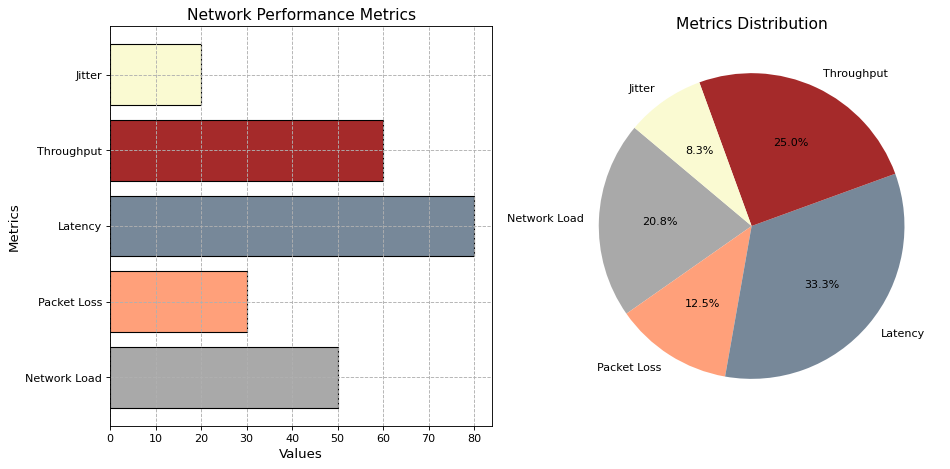
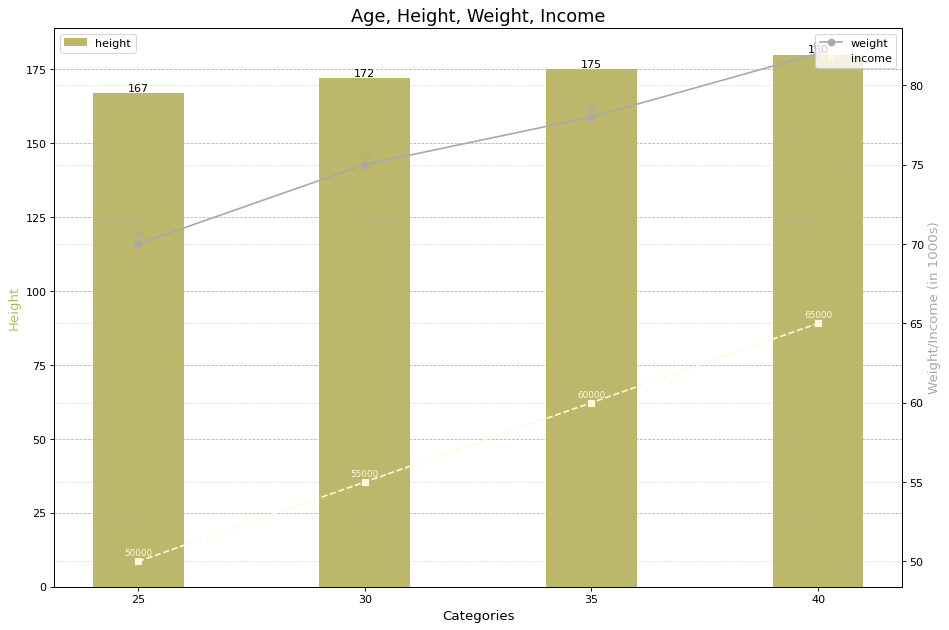

Total failure cases of factor "arrangement": 2
| ID | Chart | Question | Additional Information | Pitfalls | Most relevant pitfall |
663.png |
 |
How are the metrics arranged in terms of their values?
|
{
"Ground Truth": "Latency (80), Throughput (60), Network Load (50), Packet Loss (30), Jitter (20)",
"Prediction": "To determine how the metrics are arranged in terms of their values, let's follow these steps:\n\n1. Identify the metrics from the bar chart:\n - Jitter\n - Throughput\n - Latency\n - Packet Loss\n - Network Load\n\n2. Compare the lengths of the bars for each metric to estimate their relative values:\n - Jitter has the shortest bar.\n - Packet Loss has a slightly longer bar than Jitter.\n - Network Load has a longer bar than Packet Loss.\n - Throughput has a longer bar than Network Load.\n - Latency has the longest bar.\n\n3. Arrange the metrics in ascending order based on their estimated values:\n - Jitter\n - Packet Loss\n - Network Load\n - Throughput\n - Latency\n\n4. Determine the final arrangement as a single word, number, or phrase.\n\n<Latency>"
}
|
The model's prediction error can be attributed to a few potential pitfalls in interpreting the chart: 1. **Misreading the Values**: The model might not have correctly interpreted the numerical values associated with each metric from the bar chart. The bar lengths provide visual cues but should also be cross-referenced with the exact values provided in the dataset. 2. **Incorrect Ordering**: The model may have misinterpreted the ordering of the bars due to their visual arrangement rather than their actual values. The order of bars in the chart does not necessarily reflect their magnitude. 3. **Failure to Use Provided Data**: The model could have ignored the explicitly provided `data` dictionary, which clearly lists the metric names alongside their corresponding values. Using this would have ensured accurate ordering. ### Most Relevant Pitfall The most relevant pitfall leading to the model's error is its failure to use the provided data values accurately. Instead of relying solely on the visual interpretation of the bar lengths, the model should have directly referenced the `data` dictionary to determine the correct order of metrics based on their values. <most_relevant>Failure to Use Provided Data</most_relevant> |
Failure to Use Provided Data |
936.png |
 |
Compare the value of 'Income' divided by 1000 at age 40 (65) and the value of 'Weight' at age 40 (82). Which value is smaller?
|
{
"Ground Truth": "65 is smaller than 82",
"Prediction": "65"
}
|
To analyze the potential pitfalls leading to the error: ### Potential Pitfalls: 1. **Different Y-Axes Scales**: - The chart uses two different y-axes: one for 'Height' on the left and another for 'Weight/Income (in 1000s)' on the right. - This dual-axis setup can be confusing if not carefully observed, especially when comparing values directly. 2. **Misinterpretation of Units**: - The income values are presented as 'Income (in 1000s)', meaning the actual income at age 40 is 65,000, but it's displayed as 65 on the chart. - If someone overlooks this unit conversion, they might incorrectly compare 65 with 82 without realizing the income should be scaled up by 1000. 3. **Visual Overlap**: - The visual overlap between the bar chart and line plots could lead to misalignment when reading off values. For example, the income annotation (65) is near the weight line (82), which may create confusion. 4. **Annotation Clarity**: - Although annotations help, their placement can sometimes obscure or confuse the viewer, especially if they are too close to other elements. ### Most Relevant Pitfall: The most relevant pitfall causing the error is the **misinterpretation of units**. The model likely failed to recognize that the income value of 65 represents 65,000 when not divided by 1000. This oversight led to an incorrect comparison between the raw values 65 and 82 instead of comparing 65,000 and 82 properly. Thus, the most relevant pitfall is: <most_relevant>Misinterpretation of Units</most_relevant> |
Misinterpretation of Units |